Mailster - Email Newsletter Plugin for WordPress
an advanced plugin to send, manage and track your email campaigns
Thank you for purchasing my item. If you have any questions that are beyond the scope of this help file, please use my knowledge base as starting point. Thanks so much!
General
The Mailster Newsletter Plugin for WordPress is an advanced plugin which sends, manages and tracks your email campaigns.
Visit the Mailster Newsletter Plugin Homepage
Features
- Track Opens, Clicks, Unsubscriptions and Bounces
- Track Countries and Cities*
- Schedule your Campaigns
- Six types of auto responders
- send your latest post to your subscribers
- Use dynamic and custom Tags (placeholders)
- Webversion for each Newsletter
- embed Newsletter with Shortcodes
- Forward via Email
- Share with Social Media Services
- Unlimited Subscription Forms
- Sidebar Widgets
- Single or Double-Opt-in support
- WYSIWYG Editor with code view
- Unlimited Color Variations
- optional Image embedding
- automatic Inline Styles
- Background Image support
- Quick Preview
- Revisions support (native)
- Multi language ready
- SMTP support
- DomainKeys Identified Mail Support
- Import and Export for Subscribers
- Retina support
Requirements
- WordPress 3.8+ (4.4+ recommended)
- Fsockopen support for SMTP delivery
- DOMDocument extension
- PHP Memory Limit 128MB+
Quickstart
To get this plugin working you have to follow these steps
- extract the download zip
- log in to your WordPress site
- goto "Plugins" => "Add new" => "Upload"
- Select the extracted zip archive "mailster.zip"
- Click "Upload" and wait until the file was uploaded and extracted.
- Click "Activate Plugin"
- Click on "Newsletter" in the menu
Please go to the Settings page and configure the plugin before you start sending your first campaign!
Your First Campaign
If you have successfully activated the plugin you can create your first campaing like a regular post. Click on "New Campaign" in the "Newsletter" Menu
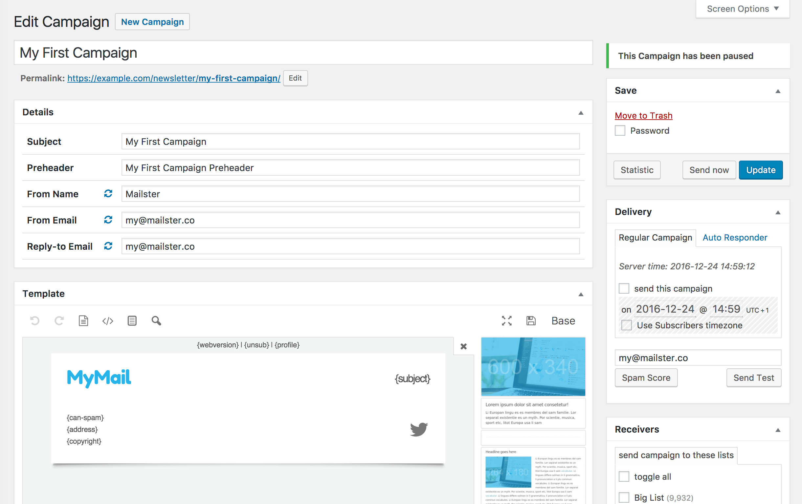
The Details
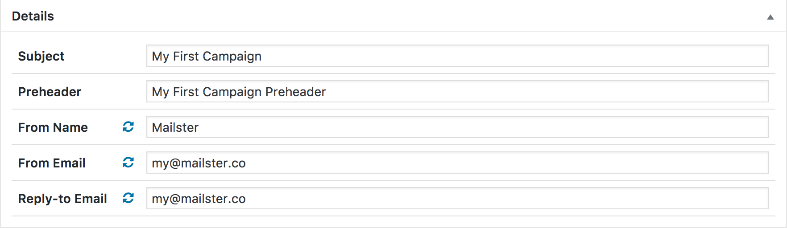
First choose a title for your campaign. The subject could be the same as the title but it's totally up to you.
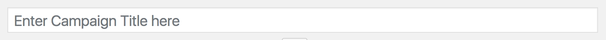
All templates are prepared for "Preheaders". Please see this section for more info about preheaders.
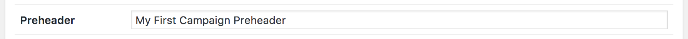
You can define the senders email address, name and the address people can reply to.
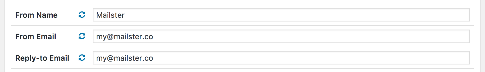
The Template
This how the template looks when you start a new campaign. There's currently no content except the header and the footer part
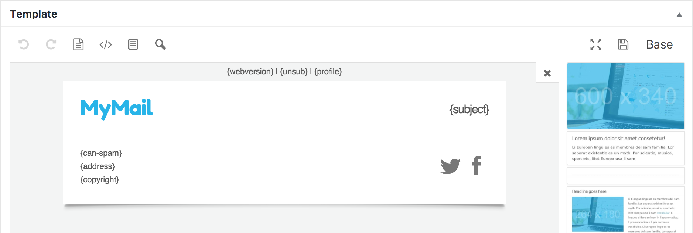
The Optionbar
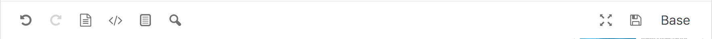
The optionbar is divided into 6 buttons:
- Undo - go back one step
- Redo - go forward one step
- Remove Modules - remove all modules at once
- Toggle HTML/Code view - switch between template and code view
- Toggle HTML/Plain Text view - switch between HTML and Plain Text view
- Quick Preview Newsletter - preview newsletter in a lightbox
Adding Content
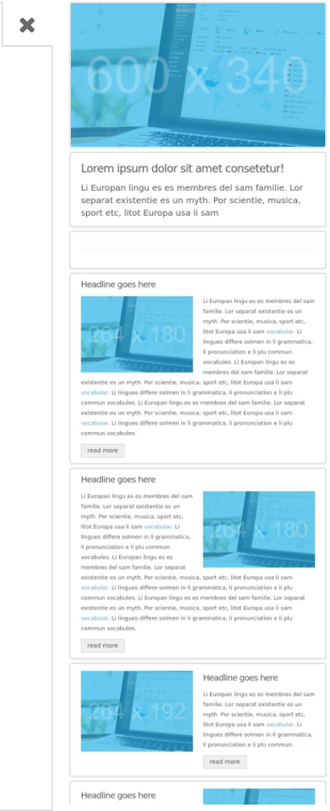To add new content you have to add new modules and fill them with content.
You can find the modules of you current template in the module bar on the right (or on the left if you're using a RTL language).
You can either click on a module or drag it into the editor to add it to you current campaign. You can rearrange modules by draging them into the new possion or using the arrows on the right.
The modules in the module bar contain screenshots of the module. If you can only see the name of the module the screenshots havn't been created yet.
It can take several minutes before the screenshots show up.
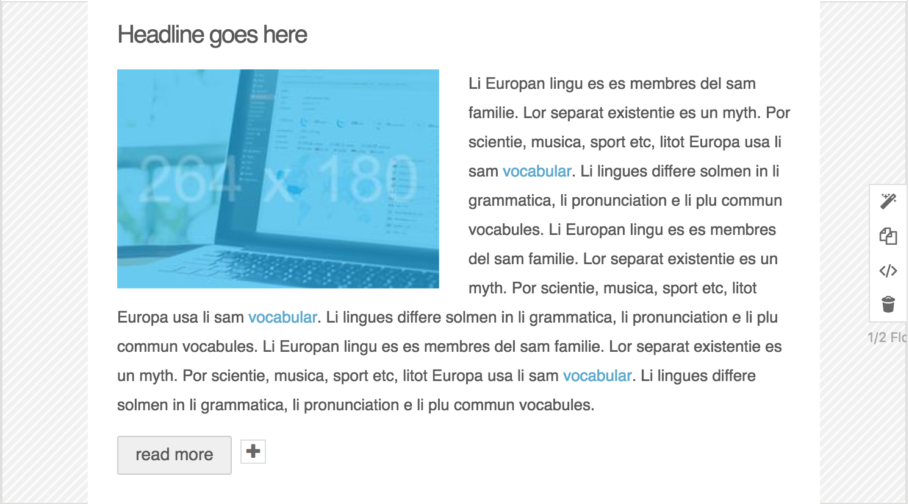
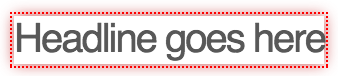
You can add four types of content:
- Single Text
- Advanced HTML Text
- Images (with optional links)
- Buttons (with required links)
- Automatic insertion
Automatic insertion
Some modules offer an 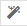 button on the right side to insert whole posts including headline, content, button with link to the article and the feature images (if exists)
You can use different type of placeholder tags in your newsletter. Check out this section for more info.
The Options
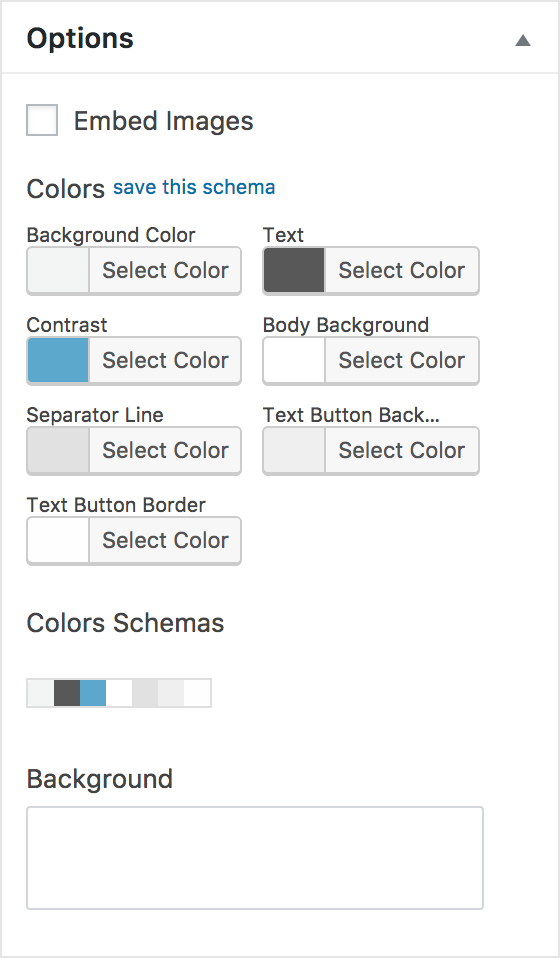
You can change the colors of your newsletter with the color option on the right. Click the arrows to the right to reset each field or save your newly created color schema to reuse it later.
If you like to set up a background you can select one of the included background in the dropdown. To include your own background just upload them in the mailster directory located at
wp-content/uploads/mailster/backgrounds/
They will get prepended to the dropdown list.
If you don't like to embed images - which reduce the file size - you can uncheck the option as well
Delivery
The Delivery Meta Box is separated into two options: Regular Campaign and Auto responder
Regular Campaign
A Regular Campaign is a campaign which get sent once to each subscriber. The receivers can get defined in the Receivers Meta Box
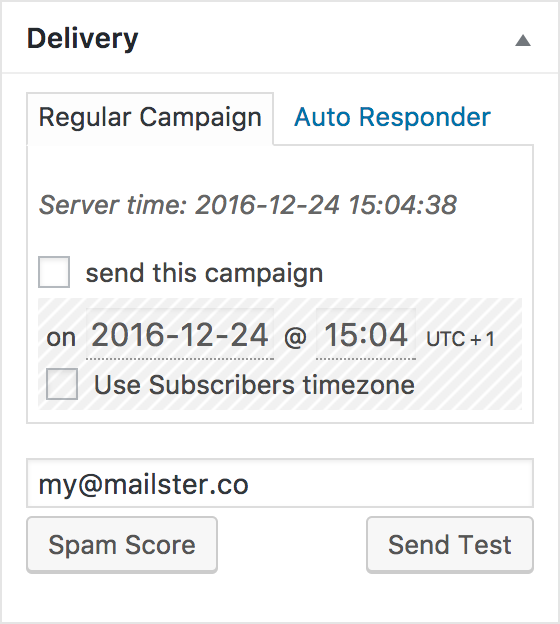
If you don't check the "Send this Campaign" checkbox you wont be able to send your campaign.
You can define any date in the future or leave the current date to send the campaign immediately when you hit the save button (Please check out the Cron Job section to know how campaigns get sent in Mailster)
To test your campaign with your email client enter your email and hit the send button.
Auto responder
Please check the Auto responder section for more information
Receivers
On the Receivers Meta Box you can limit the receivers for the current campaign
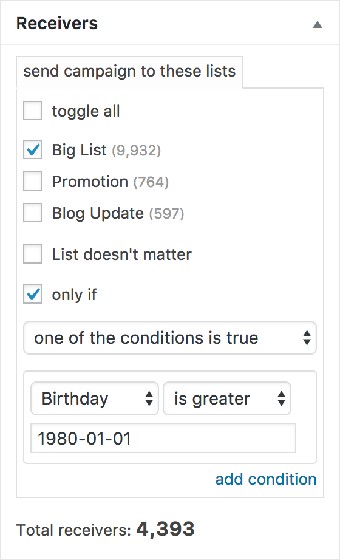
You can either send to specific lists or send to all available subscribers (List doesn't matter)
Furthermore you can limit the Receivers by choosing several conditions.
Password protected Web version
To protect the webversion with a password simple add it to the given box. Users are forced to enter this password in order to see the web version
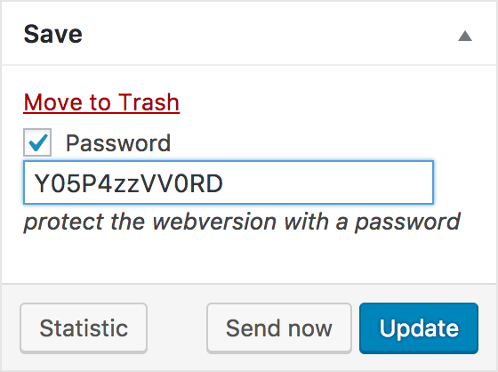
Auto responder
With auto responders you can send campaigns to subscribers after a specific time and after a certain event. There are six types of auto responders available:
- Subscriber based auto responder
- Action based auto responder
- Time based auto responder
- User time based auto responder
- Follow up auto responder
- Action Hook based auto responder
1) Subscriber based auto responders
Subscriber base auto responders a triggered if an event to a specific subscriber occurs. A mail is sent only to a single subscriber if it matches the conditions and is in at least one list.
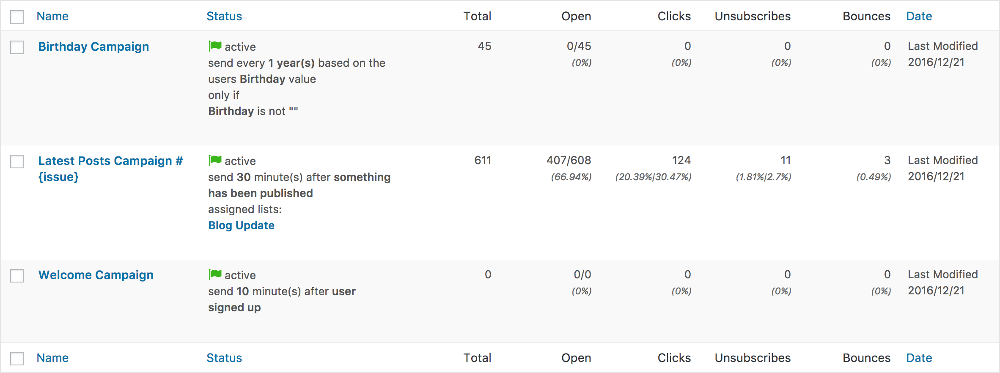
There are two events when this autoresponder is used
- a user subscribed
- a user unsubscribed
Create a new auto responder
Create a new auto responder campaign like a regular campaign and select the autorespnder tab in the Delivery box
Now you can define when the autoresponder get send after which event. Furthermore you can define some conditions which must be true before the campaign get sent.
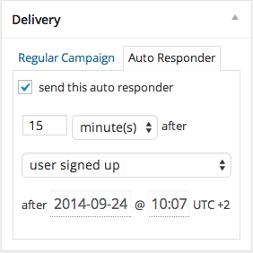In this example the autoresponder campaign get send 15 minutes after user signed up
You can also check your custom field which you can define on the "Subscriber" tab in the settings.
2) Action based auto responders
Action based auto responders are usefull if you would like to send your latest post to your subscribers right after they get published.
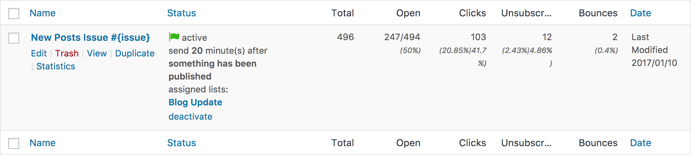
You can send any post type including custom post types.
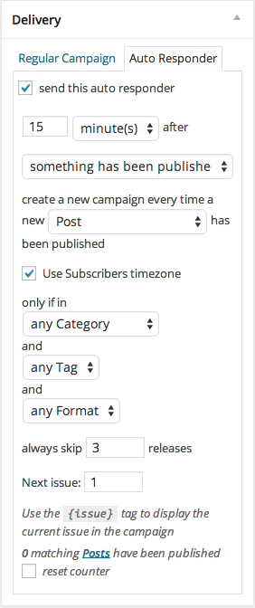In this example an new campaign - based on the auto responder - is created after a new Post as been published but only if the post was published in any Category or with any Tag or as any Format which basically means every single post.
Please note that always 2 releases should get skipped. That means that the campaign doesn't get created until you have published the third post with the matching conditions.
You can use the {issue} tag anywhere in your auto responder campaign to count them. This number get increased once a new copy of the campaign has been created.
The counter at the bottom shows the amount of already published posts and is used to calculate the skipped property. You can check the reset counter checkboy and save the campaign to reset the number.
3) Time based auto responders
To send a campaign with an interval (like daily, every week or yearly) you need time based auto responders
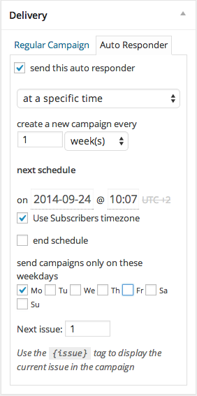
4) User Time based auto responders
If you like to send Birthday wishes you have to choose this type of autoresponder.
5) Follow Up auto responders
If you like to send a follow up campaign after a subscriber opens a campaign or clicks a link you need this type of auto responder
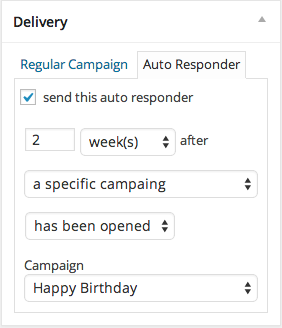
6) Action Hook auto responders
If you have a custom application and need to send a campaign when a certain event get triggered you can choose this type.
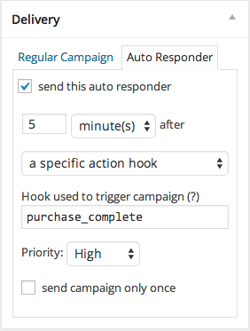
Call the do_action('your_custom_hook') method to trigger this campaign.
You can add the ID of a subscriber to send the campaign only to the passed IDs:
do_action('your_custom_hook', $ID) or
do_action('your_custom_hook', array($ID1, $ID2,...))
Prepare your auto responder
This is how your autoresponder campaign can look like:
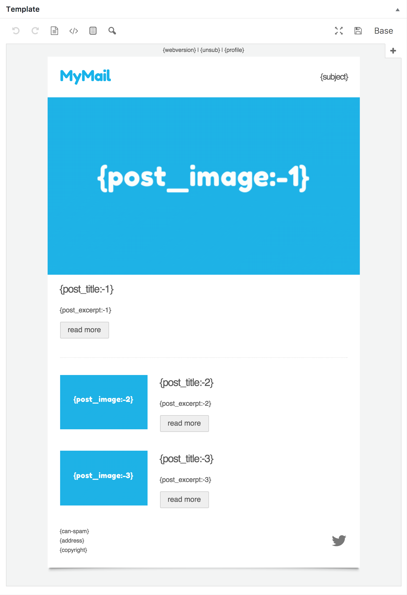
You notice many dynamic tas which get replaced when the campaign get sent.
A dynamic tag is wrapped in brackets like the other tags and start with the post type followed by an underscore and the content to display. After a colon can be a negative integer like -3 which represents the third latest entry of the selected post type.
relative tag and absolute tag explained
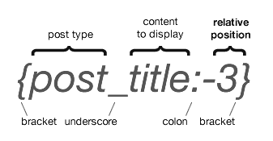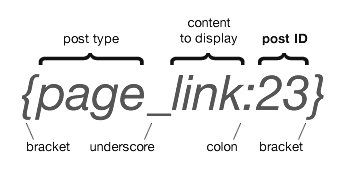
Some examples:
-
{post_title:-1}➨ displays the latest post title -
{page_title:-4}➨ displays the fourth latest page title -
{post_image:-1}➨ displays the feature image of the latest posts -
{post_image:-4|23}➨ displays the feature image of the fourth latest posts. Uses the image with ID 23 if the post doesn't have a feature image -
{post_content:-1}➨ displays the latest posts content -
{post_excerpt:-1}➨ displays the latest posts excerpt or content if no excerpt is defined -
{post_date:-1}➨ displays the latest posts date
-
{post_title:23}➨ displays the post title of post ID 23 -
{post_link:15}➨ displays the permalink of post ID 15
Instead of "post_" and "page_" you can use custom post types too
Campaign Statuses
Depending on your delivery date and if you have marked the campaign to delivery, each campaign can have up to five statuses.
Paused
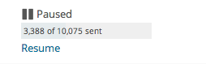
If a campaign was saved without the "Send this campaign" checkbox checked or a running campaign as been paused
Queued
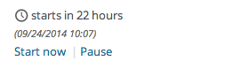
If the campaign is waiting for dispatch
Active
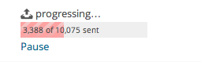
If the campaign is progression or right before to send
Finished
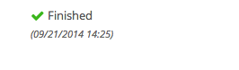
If all newsletters where sent the campaign is "finished" the date shows when the campaign has been finished
Draft
If you duplicate a campaign it's initial status is "Draft"
Overview
At the table view of the campaigns you get an overview of your campaigns
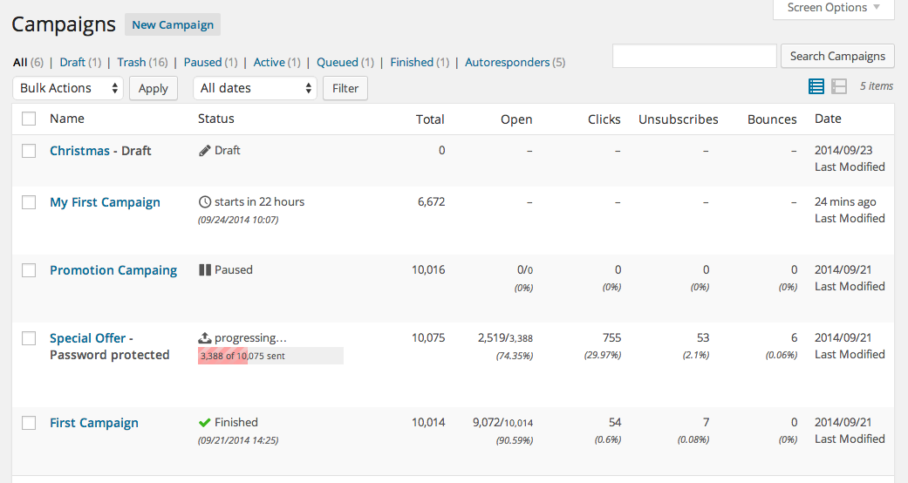
Frontpage
The Frontpage displays your newsletter as a "webversion". It provides a top bar with a link to your homepage, the title of the displayed campaign, a next and previous button to display the next or previous campaign (if exists), an optional share button and a button to close the frame.
With the share button users can share the newsletter via different social media services, bookmark services, via email or via link
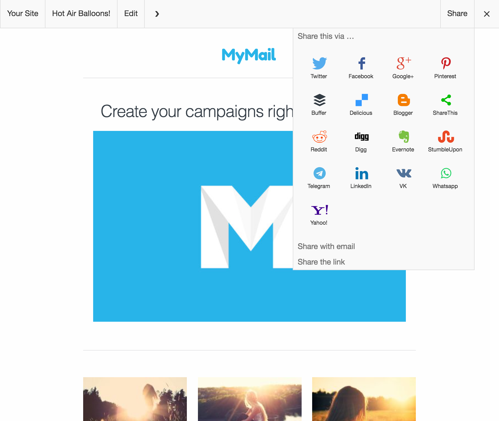
Create a custom frontpage
You can create a custom frontpage and include it in your themefolder.
copy the single-newsletter.php file located at
wp-content/plugins/mailster/views/single-newsletter.php
to the root directory of your theme folder. Now you can modify the code and add additional stylesheets to the page.
The plugin will automatically choose this template to display the webversion of the newsletter
Finished Campaigns
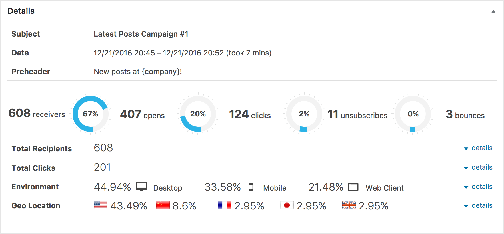
You can expand up to four section to reveal more details:
Total Recipients
Gives you a detailed list of all receivers. Subscribers which haven't received the campaign yet are not included. You can filter the list and define the ordering
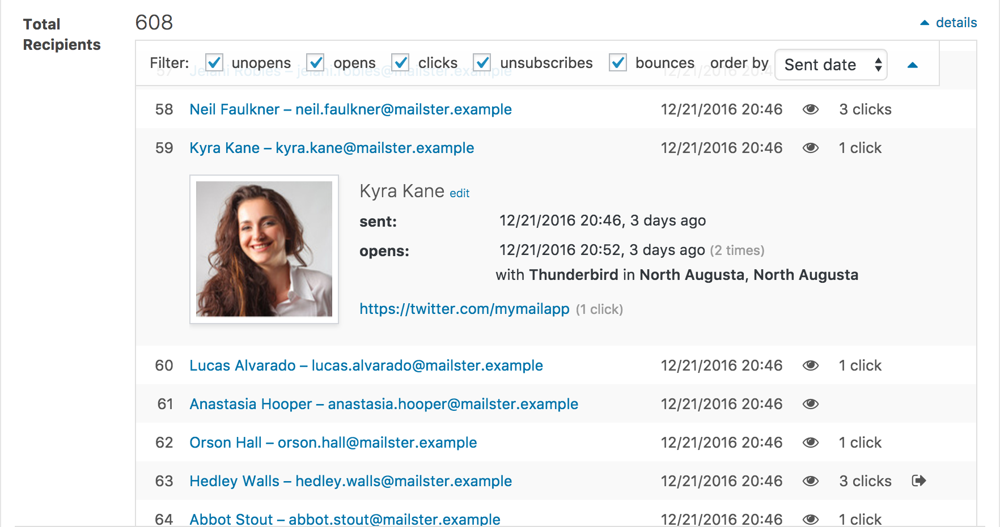
Clicks
Overview of clicked links, including amount and percentage starting with most clicked links.
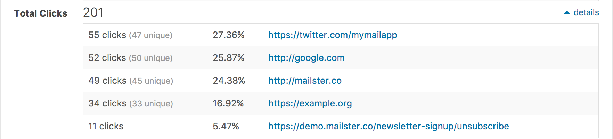
Environment
Overview of used Devices and version. All devices are devided in either Desktop, Mobile or WebClient
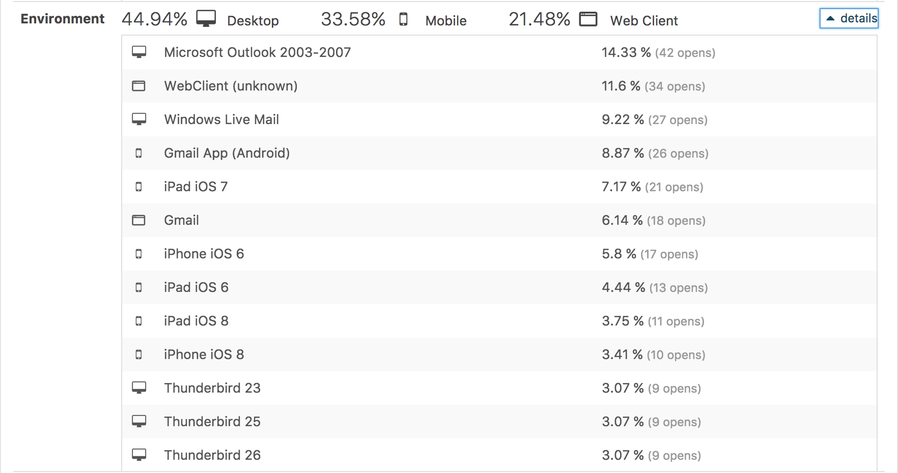
Geo Location
Provides an overview of the location where your campaings has been openend *. You can click on an individual country to get the city data (requires track geo lcoations in the settings)
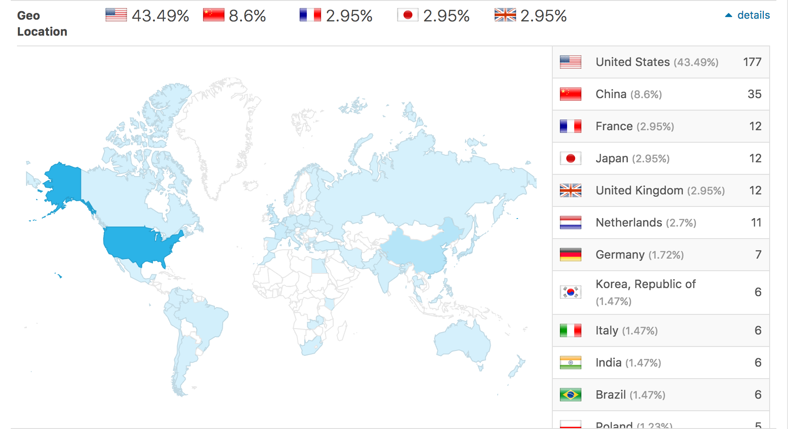
* Geodata is provided by Maxmind.com
You can find small boxes 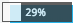 over the links which were clicked. More clicks means a higher percentage.
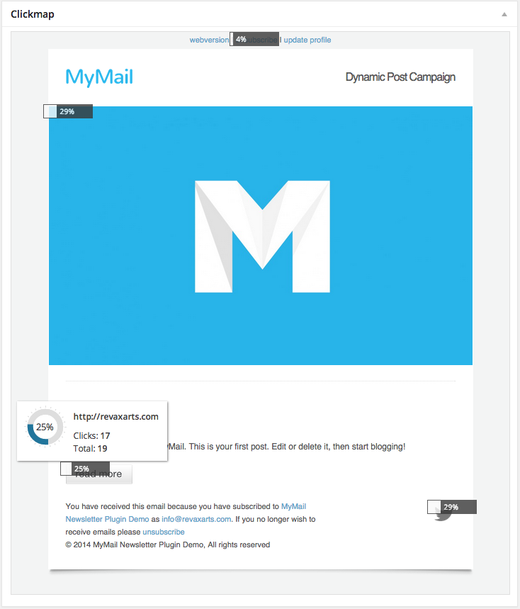
Widgets
You can use two types of widgets in Mailster
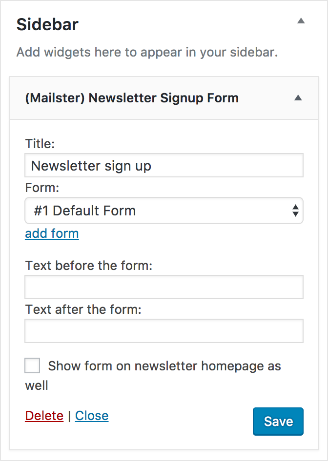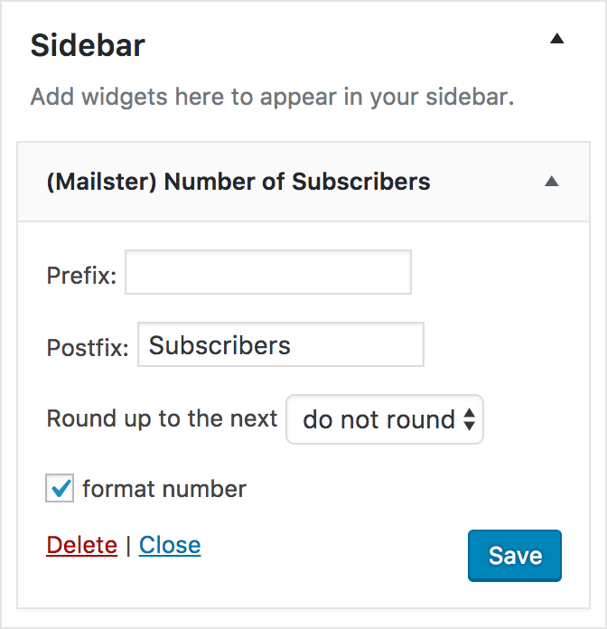
Newsletter Signup Form
Display you signup form within your sidebar or any other widget ready area. You can use the form which should get displayed and the title of the widget.
Furthermore you can define a static text before or after the form
Newsletter List
Dispaly links to your most recent campaigns. Choose the number to limit the results. Campaings must either be active or finished to get displayed
Subscribers
Mailster Newsletter Plugin allows you to manage subscribers from the Subscribers overview page.
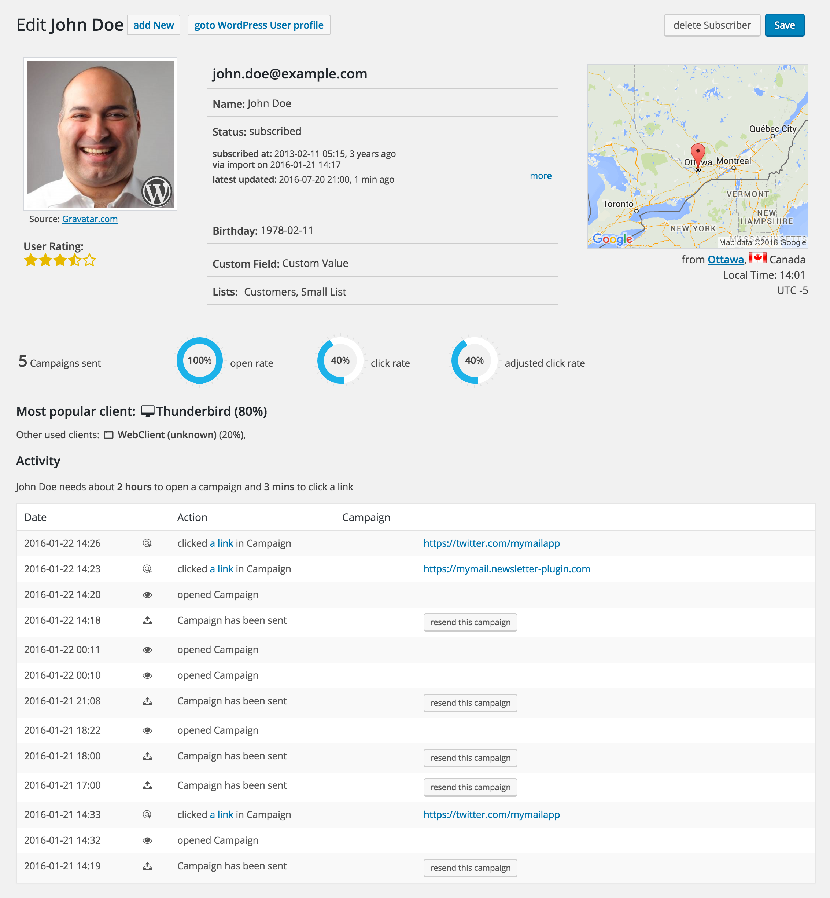
If you activate your plugin you'll find only the first and the last name field for the contacts. The users image is provided by gravatar.com.
To add more custom field you have to open the "subscribers" tab on the newsletter settings page.
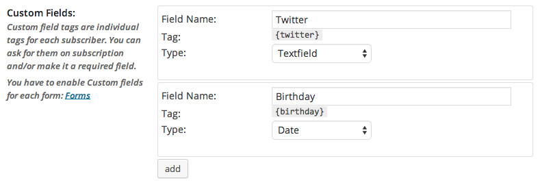
You can make each custom field required and it will be displayed on the subscription form on your website. Use the tag to use this data in your newsletter.
WordPress Users
Mailster Subscribers and WordPress Users can work closely together in Mailster. There's a dedicate settings page to define all options.
Sync WordPress Users
To keep data of your WordPress Users and your subscribers in sync you can define which fields should get synchronized when data has been updated
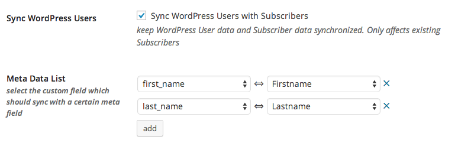
You can manually sync them for existing Users/subscribers as well To add Users automatically to you subscribers you have three options

Automatically add new WordPress Users to Mailster
Mailster can add new WordPress Users to your subscribers list
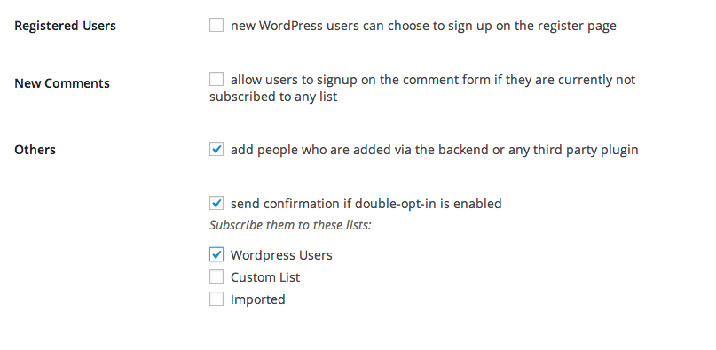
Registered Users
Add the User if he sign ups to your blog via the native registration form provided by WordPress
New Comments
appends a checkbox for users who add a comment to your blog entries
Other
All users added via the backend or with a third party plugin.
Manage Subscribers
If you have a list of subscribers you can simple import them on the "Manage Subscribers" page.
Import Subscribers
You can either upload your CSV file or paste the content directly from Excel into the textarea on the right
If you data has been uploaded to your server you get a raw preview of your contacts.
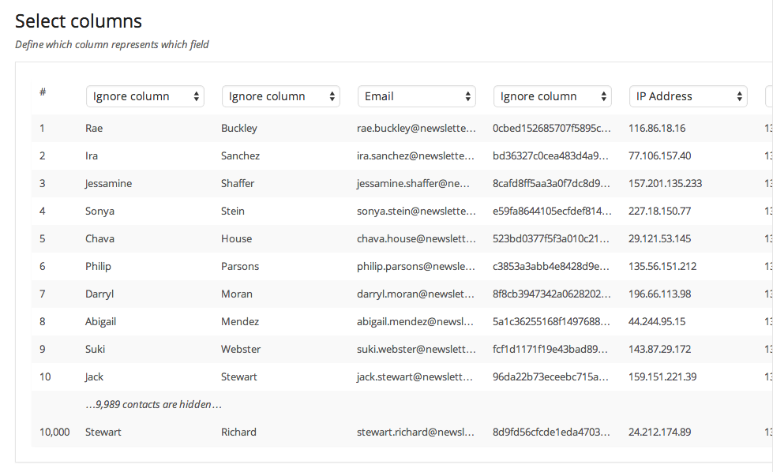
You can define to which list you like to add the subscribers and the status they get when they are imported. If you choose "pending" all imported contact will receive an opt-in message to confirm their subscription)
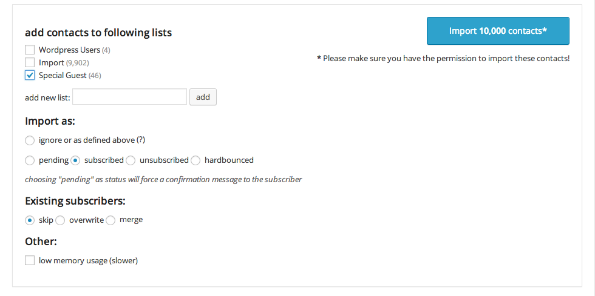
If an subscriber already exits you can choose between three options how Mailster handle the import:
- Skip: skips the subscriber and the existing one with all it's data will stay
- Overwrite: Overwrite existing users but keeps all actions for statistics
- Merge: Merge existing users with new on so missing fields can get filled up
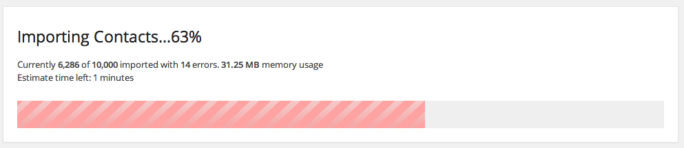
After the import has been finished you can see which emails are not imported.
Export Subscribers
You can export all of your subscribers into a CSV file. The file has to be prepared on your server and can take a while before it's accessible.
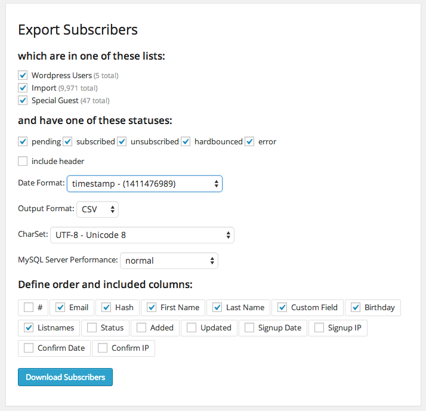
Delete Subscribers
You can delete subscribers one by one or use this bulk delete option. Simple select which lists you would like to empty and click on the Delete Subscribers button. This cannot be undo!
Templates
The Mailster Newsletter Plugin comes with a flexible template. To get more templates check out this page
To upload a Mailster compatible template drag the ZIP file into the upload field
The Form
The subscribption form can be defined on the "Form" tab in the settings.
All forms are cached and comes default classes. Depending on your settings the form markup is this:
<form action="" method="post" class="mailster-form mailster-form-submit" id="mailster-form-X"> <div class="mailster-form-info"> </div> <div class="mailster-email-wrapper"> <label for="mailster-email-X">Email <span class="required">*</span></label><input id="mailster-email-X" name="userdata[email]" type="text" value="" class="input mailster-email required" tabindex="1"> </div> <div class="mailster-firstname-wrapper"> <label for="mailster-firstname-X">First Name</label><input id="mailster-firstname-X" name="userdata[firstname]" type="text" value="" class="input mailster-firstname" tabindex="2"> </div> <div class="mailster-lastname-wrapper"> <label for="mailster-lastname-X">Last Name</label><input id="mailster-lastname-X" name="userdata[lastname]" type="text" value="" class="input mailster-lastname" tabindex="3"> </div> <div class="mailster-custom-field-wrapper"> <label for="mailster-custom-field-X">Custom Field</label><input id="mailster-custom-field-X" name="userdata[custom-field]" type="text" value="" class="input mailster-custom-field" tabindex="4"> </div> <div class="mailster-lists-wrapper"> <label>Lists</label> <ul> <li><label title="Description"><input class="mailster-list-wordpress-users" type="checkbox" name="lists[]" value="wordpress-users" checked> Wordpress Users <span class="mailster-list-description mailster-list-description-wordpress-users">Description</span> </label></li> <li><label title=""><input class="mailster-list-2nd-list" type="checkbox" name="lists[]" value="2nd-list" checked> 2nd List</label></li> </ul> </div> <div class="mailster-submit-wrapper form-submit"> <input name="submit" type="submit" value="Subscribe" class="submit-button button" tabindex="5"> </div> </form>
There are three ways to embed the form:
-
Use the
[newsletter_signup_form id=X]shortcode -
Use
mailster_form( $id = 0, $tabindex = 1, $echo = true, $classes = '' );function in your code - Use the included widgets
Preheaders
Preheaders are small phrases (up to 80 letters) which should help increasing your clickthrough rate. Many email clients display the first letters of an email in their preview area.
Preheaders are invisible in the normal email view and show up only in the preview pane of some clients
Examples
Outlook 2007 + 2010
Google Mail

iPhone
Usefull resources
Cron Job
All of your campaigns are sent via a cronjob. There are two cron services available:
wp_cron
This is the cron service which is built right into WordPress. If you choose this option you don't have to set up anything else to get your campaign sent. You only have to visit your blog (backend or frontend) regularly to trigger the cron.
Read more about the WordPress cron service here
Real cron service
Much better is a real cron service offerd by your hosting provider.
You have to call a specific URL which looks like:
http://yourwebsite.tld/wp-admin/admin-ajax.php?action=mailster_cron&secret=735f0e3ab63d7d88b9f8dd10539b8a4c
You can find your URL in the Newsletter Settings page within the "Cron" tab
There are also some free service out there:
For Developers
You can check for Mailster with
if(function_exists('mailster'){
//do stuff with Mailster
}
Adding new subscribers in Mailster 2 works with the "add" method of the subscribers class.
$subscriber_id = mailster('subscribers')->add($entry, $overwrite);
$subscriber_id holds the ID of the inserted subscriber or a WP_Error object if it fails.
$entry can be a single email as string or a assoc array with field => values pairs
$overwrite overwrites the subscriber with the same email if exists
$subscriber_id = mailster('subscribers')->add(array(
'firstname' => 'John',
'lastname' => 'Doe',
'email' => 'john.doe@example.com',
'status' => 1, //1 = subscribed (default) , 0 = pending, 2 = unsubscribed, 3 = hardbounced
'custom-field' => 'Custom Value',
'referer' => 'Your referer' //default = $_SERVER['REQUEST_URI']
...
), $overwrite );
To assign lists you can use the assign_lists method like
$success = mailster('subscribers')->assign_lists($subscriber_ids, $lists, $remove_old = false);
$subscriber_ids is either a single id or an array with id’s of subscribers
$lists is either a single id or an array with id’s of lists
$remove_old will remove all assigned lists before assigning the new once
$success is boolean
Lists
To work with lists you can use the Lists class with mailster('lists')
Get a list of all lists
$lists = mailster('lists')->get();
a list object look like
( [ID] => 2, [parent_id] => 0, [name] => 'Wordpress Users', [slug] => 'wordpress-users', [description] => 'The description', [added] => 1411541385, [updated] => 1411541385 )
To get a single list add the $ID as first argument:
$my_lists = mailster('lists')->get($ID);
Basic Example Integration
This is a quick example how to implement a subscribe feature to your plugin
//check if Mailster 2 exits
if(function_exists('mailster'){
//prepare the userdata from a $_POST request. only the email is required
$userdata = array(
'email' => $_POST['email'],
'firstname' => $_POST['firstname'],
'lastname' => $_POST['lastname'],
'custom-field' => $_POST['custom-field'],
'referer' => 'Your referer',
'status' => 0, //0 forces a confirmation message
....
);
$overwrite = true;
//add a new subscriber and $overwrite it if exists
$subscriber_id = mailster('subscribers')->add($userdata, $overwrite);
//if result isn't a WP_error assign the lists
if(!is_wp_error($subscriber_id)){
//your list ids
$list_ids = array(123, 456);
mailster('subscribers')->assign_lists($subscriber_id, $list_ids);
}else{
//actions if adding fails. $subscriber_id is a WP_Error object
}
}
Adding Subscribers from WordPress User
You can easily add new subscribers from an existing WordPress User with
$subscriber_id = mailster('subscribers')->add_from_wp_user($user_id, $userdata = array());
$user_id is the ID of the WordPress user
$userdata is an optinal array with user fields which overwrites the values from the WordPress user
$subscriber_id holds the ID of the inserted subscriber or a WP_Error object if it fails.
Useful Snippets
Here are some useful snippets to extend the functionality of Mailster:
adding a custom style to every mail
function mystyle_function($color = 'black'){
return 'a{color:'.$color.' !important}';
}
mailster_add_style('mystyle_function', 'red');
adding a dynamic tags
function mytag_function($option, $fallback, $campaignID = NULL, $subscriberID = NULL){
return 'My Tag: Option: '.$option."; Fallback: ".$fallback;
}
mailster_add_tag('mytag', 'mytag_function');
use: {mytag:option|fallback}
new error on form submit
function mailster_submit_errors($object){
$object['errors'][] = 'new error';
return $object;
}
add_filter( 'mailster_submit', 'mailster_submit_errors' );
adding additional form elements
function mailster_form_fields($fields, $formid, $form){
$pos = count($fields) - 1;
$fields = array_slice($fields, 0, $pos, true) +
array("fieldID" => "Fieldcontent") +
array_slice($fields, $pos, count($fields) - 1, true) ;
return $fields;
}
add_filter( 'mailster_form_fields', 'mailster_form_fields', 10, 3 );
Changelog
You can find the change log online here
mailster.co/changelog
Sources and Credits
- This product includes GeoLite data created by MaxMind, available from http://maxmind.com
Files are maybe not included because of the license
Once again, thank you so much for purchasing this plugin. As I said at the beginning, I'd be glad to help you if you have any questions relating to this theme. No guarantees, but I'll do my best to assist. If you have a more general question relating to the themes on ThemeForest, you might consider visiting the forums and asking your question in the "Item Discussion" section.
Xaver Birsak – revaxarts.com